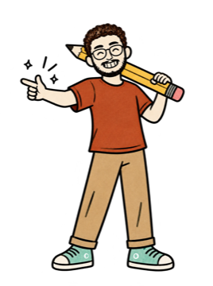

What you need
- Claude Code, the desktop app or the terminal (claude.com/claude-code)
- An Instagram professional account linked to a Facebook Page
- A Meta developer app (free) — step 1 sets it up
- Finished reels to test, a few a day
Trial reels are shown to people who don't follow you yet. So you can test many ideas without spamming your followers. Claude posts the trials you approve, reads how each one did, and points at the winner. You share the winner with your followers.
Connect Instagram

The prompt
Help me connect my Instagram account to the Instagram Graph API so you can post reels and read their insights. 1. Walk me through creating a Meta developer app and linking it to my Facebook Page and my Instagram professional account. 2. Tell me exactly which permissions to add: instagram_basic, instagram_content_publish, instagram_manage_insights, pages_show_list, pages_read_engagement. 3. I will sign in and generate the token myself. Give me a command that saves it to a local file outside this project, and never print it back. 4. Run a 'whoami' check that shows my handle, my Page and my publishing quota.
You sign in to Meta and press every button yourself. Claude only reads the saved token from your Mac.
Post a trial
The prompt
Write a small poster script that publishes one finished reel as a TRIAL reel.
1. Use the standard upload with a video_url and trial_params = {"graduation_strategy": "MANUAL"}.
2. Serve the file from a temporary public link (a Cloudflare quick tunnel is fine) and close it as soon as Meta has fetched the video.
3. Wait until the container is FINISHED, then publish.
4. First do an upload-only test that never publishes.My first try used the resumable upload. It went out as a normal reel, visible on my profile. The video_url upload is the one that stays a trial. Check your first one from another account.
Approve every post
The prompt
Add an approval step: nothing posts until I press Approve. 1. Keep a queue of finished reels, each with its caption, slot time and 'trial' or 'regular'. 2. Only a reel I approved goes into the outbox. Freeze the exact file when I approve, and refuse to post anything that changed after that. 3. Post approved reels at their time slots, at most 5 trials a day, and log every post.
This is the one step I never hand over. Claude drafts and posts; I decide.
Read the numbers
The prompt
Every few hours, pull insights for every trial reel and keep the history: views, reach, skip rate, average watch time, shares, saves, comments and likes. Save each reading with its time so we can compare reels at the same age.
Score against your median
The prompt
Build my baseline from my own past trial reels: the median of each metric. Score each new trial against it: lower skip rate and higher watched %, shares, comments and saves count, each as a multiple of my median. Wait about 24 hours before calling a winner, and tell me when it's too early.
Your median, not someone else's numbers. One of my trials hit 46,016 views; my usual trial is far lower. The median is what tells you a reel is really an outlier.
Pick the winner
The prompt
Each day, show me a short report: every trial, its score, and the one worth showing my followers. Then tell me what the winner did differently (the hook, the first 2 seconds, the length) so the next scripts can try more of it.
Instagram has no API to move a trial to your followers. You share the winner yourself, in the app.
The honest limits
- Meta caps how many posts an account can publish in 24 hours. Ask Claude to read your own limit from the API.
- The API can't tell you whether a reel is still a trial, and it can't move a trial to your followers.
- Reels insights don't include follows or profile visits per reel.
- Your Mac has to be awake at the posting times if the poster runs on it.
- Keep sponsored posts and reels with film or TV clips out of the loop. Post those by hand.
Never paste your password or token into a chat. Generate the token yourself, keep it in a file outside your project, and keep the Approve button for yourself.

Now test your first 5
Five trials a day is 150 a month. Let the numbers pick your next hook.